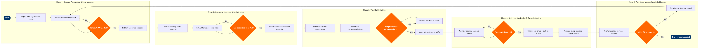

| Step | L4 Step Name | KPI / Target | Pain Point / Risk | Gate |
|---|---|---|---|---|
| 1.1 | Ingest booking & flown data from PSS | Data completeness ≥ 99.5% of all PNRs reconciled within 2 hours of departure | Altéa PSS coupon reconciliation latency can delay same-day close files by up to 4 hours, compressing the overnight optimisation window | |
| 1.2 | Enrich data with competitive fare & schedule feeds | Competitive fare parity check completed for 100% of O&D pairs within planning horizon | MIDT data lags actuals by 3–5 days, reducing confidence in competitor load factor estimates for near-term departures | |
| 1.3 | Run O&D demand forecast model | Forecast MAPE ≤ 15% at O&D level for departures within 30 days | SkyCAST demand models trained on pre-2020 data underweight volatile post-COVID travel patterns; requires periodic manual seasonality overrides | |
| 1.4 | Validate forecast accuracy against holdout set | Forecast MAPE ≤ 15%; rejection triggers reforecast within 4 hours | Redshift query contention during peak batch windows can delay accuracy checks, pushing AU updates past the 02:00 optimisation deadline | ⚠ |
| 2.1 | Define booking class hierarchy and nested buckets | 100% of ATPCO-filed fare classes mapped to NRM booking classes before schedule activation | Misalignment between ATPCO fare basis codes and NRM class definitions causes availability mismatches in GDS displays, leading to revenue leakage | |
| 2.2 | Set authorization unit (AU) levels per fare class | AU initialisation completed for 100% of flights ≥ 90 days prior to departure | Manual AU overrides by market analysts outside NRM create version conflicts; no audit trail for override rationale increases regulatory audit risk | |
| 2.3 | Validate fare class mappings against ATPCO filings | Zero GDS availability mismatches attributable to class mapping errors post-activation | ATPCO filing changes by competitors can trigger a same-day re-mapping requirement; NRM does not auto-ingest ATPCO tariff updates in real time | ⚠ |
| 2.4 | Activate nested inventory controls in Altéa | Availability synchronisation latency Altéa → GDS ≤ 5 minutes | Altéa availability propagation to Sabre and Travelport GDS can lag by up to 15 minutes during peak filing windows, creating booking class sell-out errors | |
| 3.1 | Run EMSRb / O&D seat allocation optimisation | Revenue per available seat kilometre (RASK) improvement ≥ 2% vs baseline AU | NRM O&D optimiser requires full network connectivity data; partial connectivity caused by codeshare partner IT gaps degrades optimisation quality | |
| 3.2 | Review and approve AU recommendations | Analyst review cycle ≤ 90 minutes per market cluster; override rate ≤ 20% | High override rates in thin O&D markets indicate NRM model underfitting; manual overrides are not fed back into the model, perpetuating forecast error | ⚠ |
| 3.3 | Apply approved AU updates to live inventory | AU update applied to 100% of affected flights within 30 minutes of approval | Bulk AU update jobs during peak hours can queue behind other NRM batch processes, delaying availability changes for same-day and next-day departures | |
| 4.1 | Monitor booking pace against forecast curve | Analyst response to pace deviation alert ≤ 2 hours for departures within 14 days | Tableau dashboards pull from AWS Redshift snapshots with 1-hour refresh lag; real-time anomalies for high-demand events (concerts, sports) are missed until the next refresh | ⚠ |
| 4.2 | Apply sell-up action or open lower classes | Yield improvement ≥ 1.5% per sell-up intervention vs control flights | Sell-up elasticity coefficients in NRM are recalibrated only quarterly; rapid fare environment changes (fuel surcharge adjustments) make coefficients stale within weeks | |
| 4.3 | Update bid prices for O&D revenue integrity | Bid price refresh cycle ≤ 4 hours for flights within 7 days of departure | Bid price vector updates are network-wide calculations; during irregular ops, displaced passengers and re-accommodation can invalidate bid prices across 30+ connected flights simultaneously | ⚠ |
| 4.4 | Manage group booking displacement impact | Group displacement cost ≤ 8% of group revenue contribution on affected flights | Altéa group allotment module does not integrate real-time NRM bid prices; group pricing decisions rely on analyst manual look-up, creating inconsistent displacement cost accounting | ⚠ |
| 5.1 | Capture post-departure spill and spoilage actuals | Spill (denied boardings) ≤ 1.5% of passengers carried; spoilage (empty seats in high class) ≤ 3% of capacity | Denied boarding data from airport check-in is not always tagged with the booking class of the displaced passenger, reducing spill attribution accuracy | |
| 5.2 | Evaluate forecast model performance and recalibrate | Model recalibration completed within 5 business days of departure; MAPE improvement ≥ 1 pp per calibration cycle | SkyCAST model recalibration requires manual parameter uploads; there is no automated feedback loop from NRM actuals to SkyCAST, creating a 5–7 day lag in model learning | ⚠ |
| 5.3 | Publish yield performance report to stakeholders | Report published within 2 business days of week close; RASK vs budget variance explained for all markets > ±3% | Manual data assembly from Altéa, NRM, and Redshift for the weekly report takes 6–8 analyst hours; no single integrated reporting layer across PSS and RM systems |